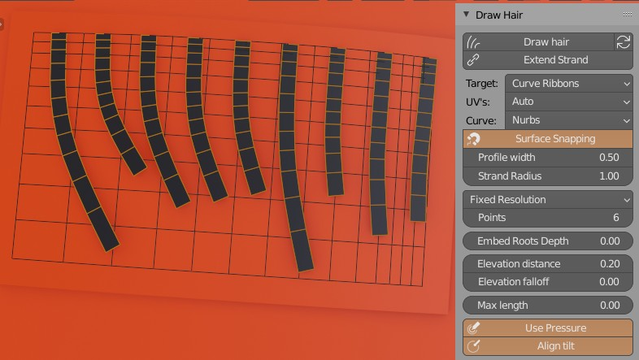
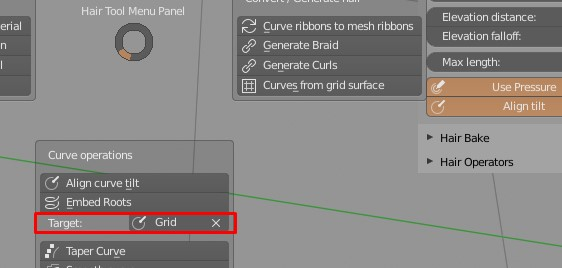
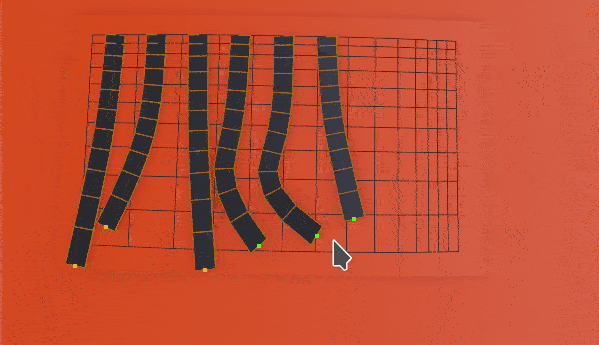
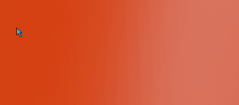

Drawing Hair¶
 You can draw hair (curve ribbons or particle hair) directly on selected mesh surface. It useful when you want finish your hair model, and place some hair cards by hand or when you want to manually control hair placement.
To use hair drawing, you have to:
- have mesh object selected, on which surface you want to draw hair
- enable 'Draw Hair' button located in: right UI Sidebar: "Hair Tool" tab -> 'Draw Hair' panel.
- select 'Draw' method: curve, curve ribbon or particle hair
- now hold D-Key and draw in 3D viewport with LBM; new strands will be painted.
Most of the settings are the same for both: drawing curve ribbons and particle hairs.
Note: When you modify object that is being drawn on, you may need to refresh the snapping cache by using 'Refresh' icon located next to 'Draw hair' button. Other wise the strokes will snap to old object position.
Drawing curve ribbons:¶
When drawing, if you have curve object selected, new strokes will be added to this selected curve; if mesh is selected then new curve ribbons will be created. In first case target mesh, used for stroke snapping, is defined in bottom HTool Pie Menu (Ctrl+Shift+H):
 Target property is used to define object that will be used for snapping, tilt aligning etc.
Example od drawing curve ribbons
Parameters:¶
 Extend Strand - Add new drawn points te existing selected strands
-
Profile Width - curve profile width (same for all strands)
-
Strand Radius - per strand radius
-
Snapping
- With Snapping - snaps whole drawn stroke to mesh surface, then elevate strand above surface by 'Elevation distance'
- Without Snapping - only first point of stroke is snapped to drawn mesh surface. The following points are then placed orthogonally to view direction
- UV - Assign UV box to drawn curve ribbons: Automatically or pick of the UV boxes, by box number (see Defining UV's)
 Offset to tip - Offset spline points more toward tip
Offset to tip - Offset spline points more toward tip
 Offset to root - Offset spline points more toward root
Offset to root - Offset spline points more toward root
 Resolution - [Adaptive] or [Fixed] - point count per spline
Resolution - [Adaptive] or [Fixed] - point count per spline
 Max length - Maximum hair length (0 - disabled)
 Elevation distance - Elevation strands above surface by this distance
Elevation distance - Elevation strands above surface by this distance
 Elevation falloff - Elevation strength over strand length
Elevation falloff - Elevation strength over strand length
 Embed Roots Depth - Move strands first point into mesh surface (only curve ribbons)
Embed Roots Depth - Move strands first point into mesh surface (only curve ribbons)
 Align tilt - Align ribbons tilt to surface
Align tilt - Align ribbons tilt to surface
 Use Pressure - Use pen pressure to change strand width
Use Pressure - Use pen pressure to change strand width
Drawing particle hair:¶
Example od drawing particle hair
Drawing particle hair is basically the same as drawing curve ribbons, but the resulting strokes will be converted to particle hair.
- If object that you are painting has no particle systems, new one will be created.
- If object that you are painting has particle systems, new strands will be appended to active particle hair system.